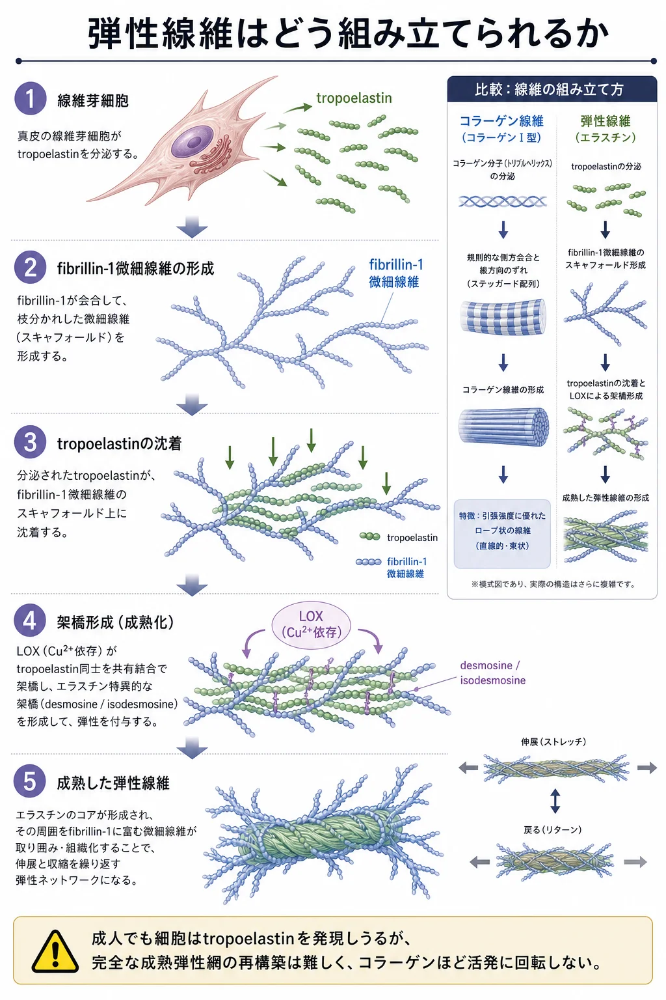
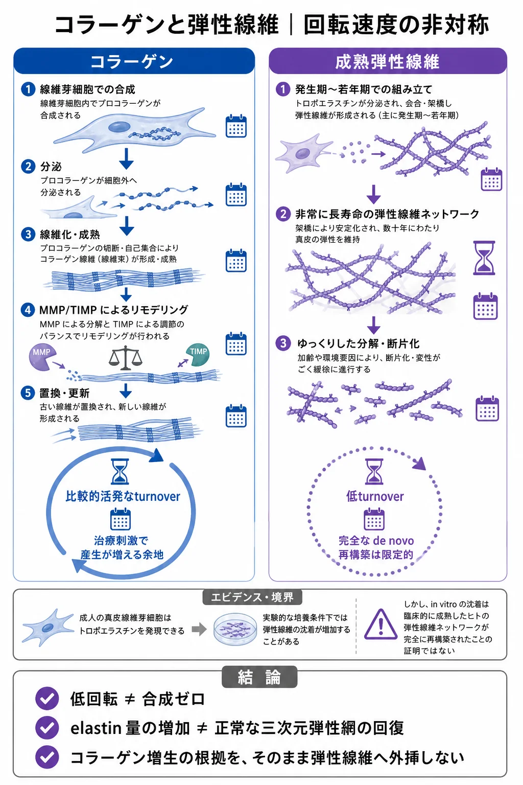
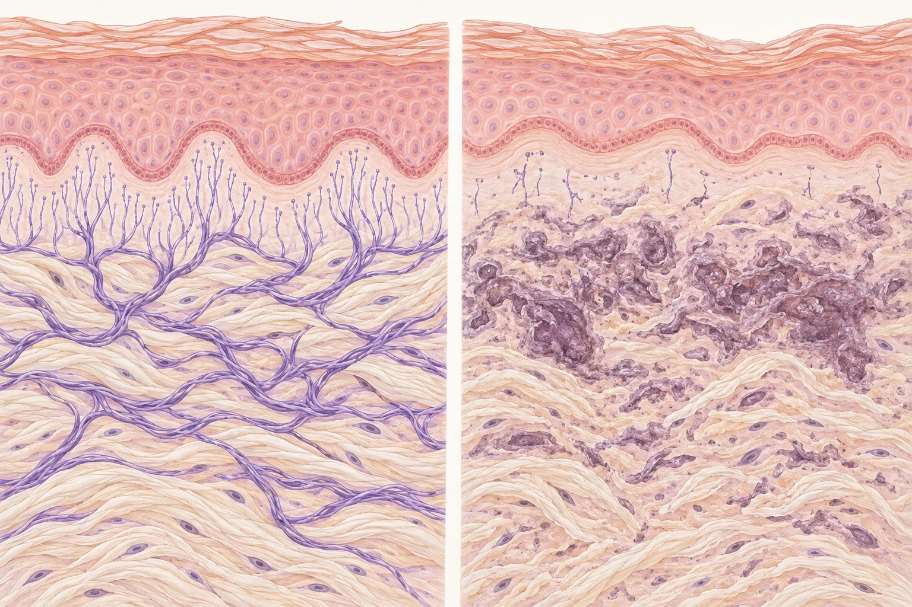

美容皮膚科 ／ 組織の生化学
弾性線維と膠原線維皮膚を支える強さと、伸びて戻る力
公開 2026-09-15 ／ 最終更新 2026-10-01
皮膚は、体の動きに合わせて伸び、力が抜けると元の形に戻ります。同時に、引っ張られても簡単には破れない強さを持っています。この性質を支えるのが、真皮にある膠原線維（コラーゲン線維）と、弾性線維（エラスチンを主成分とする線維）です。
コラーゲン線維は引っ張る力に耐え、皮膚が伸びすぎるのを防ぎます。弾性線維は伸びた皮膚が元に戻るのを助けます。両者は同じ真皮の中で働きますが、分子の構造も、傷んだあとの作り直され方も異なります。
コラーゲンの合成と線維への組み立ては線維芽細胞とコラーゲンで扱います。ここでは、二つの線維の役割、作られ方と更新、傷み方を比較し、治療でどこまで回復できるかを考えます。弾性線維については、材料のエラスチンが線維になる過程も詳しく見ていきます。
この章の一言
コラーゲン線維は皮膚を支える強さを、弾性線維は伸びて戻る力を担います。成人の弾性線維は作り直されにくく、傷む前の構造と機能を回復させる治療は、まだ確立していません。
1 コラーゲンとエラスチンは、何が違うのか
コラーゲン（collagen）とエラスチン（elastin）はタンパク質の名前です。コラーゲン分子が集まってできるのが膠原線維です。弾性線維は、エラスチンを中心に、fibrillin（フィブリリン）というタンパク質に富む細い線維が組み合わさった構造です。この細い線維を微細線維（microfibril）と呼びます。
| 膠原線維（コラーゲン線維） | 弾性線維 | |
|---|---|---|
| 主な構造 | 主にI型・III型コラーゲンが集まり、束を作る | エラスチンと、fibrillinに富む微細線維が組み合わさる |
| 力がかかったとき | 波打った線維が伸びて張り、さらに引っ張る力に抵抗する | 伸びて変形し、力が抜けると元に戻る |
| 皮膚での役割 | 引っ張りに耐える強さを保ち、過度な伸展を抑える | 動きに合わせて伸縮し、形の回復を助ける |
| たとえると | 引っ張る力を受け止めるロープの束 | 伸ばすと戻るゴムの網 |
皮膚では、この二つが重なって働きます。伸ばし始めには弾性線維が変形に応じ、さらに伸ばすとコラーゲン線維が張って抵抗が強くなります。皮膚をつまんで離したときの戻りには、これらの線維に加えて、ECMの水分や皮下組織も関わります。
この役割の違いは、分子の構造と線維の組み立て方から生まれます。
2 作られ方と、更新の違い
どちらも線維芽細胞が材料を作り、細胞外で線維に組み立てます。材料を分泌したあとに、分子の配置と架橋が進むことが共通しています。
| 過程 | コラーゲン線維 | 弾性線維 |
|---|---|---|
| 細胞内で作る材料 | 小胞体内で加工され、三重らせんになったprocollagen | エラスチンの前駆体tropoelastin |
| 細胞外での組立 | 両端のpropeptideが切断され、分子がずれて並んで原線維・線維になる | tropoelastinが集まり、fibrillinに富む微細線維に沿って配置される |
| 架橋の役割 | 分子を結び、線維の強さと安定性を支える | 分子の鎖をつなぎ、繰り返し伸縮できる網を保つ |
| 成人での更新 | 合成と分解が続き、創傷などに応じて産生と再構築が進む | 成熟エラスチンは長く残り、入れ替わりは緩やか |
コラーゲンの細胞内加工・分泌・線維形成の詳細は線維芽細胞とコラーゲンで扱います。ここでは、異なる組み立て方をする弾性線維を補足します。
エラスチンが、伸びて戻る線維になるまで
線維芽細胞は、エラスチンの材料となるtropoelastin（トロポエラスチン）を作り、細胞外へ分泌します。材料は互いに集まり、fibrillinに富む微細線維の足場に沿って配置されます。そこへ分子同士を結ぶ架橋ができ、安定したエラスチンになります。
エラスチンの分子の鎖は、力を受けると伸びる方向へ並び、力が抜けると元の乱れた配置へ戻ろうとします。架橋は鎖同士が離れてしまうのを防ぎ、繰り返し伸縮できる網を保ちます。

伸びて戻る力には、エラスチンの性質と、線維としてつながった構造の両方が必要です。 材料の産生、足場への配置、架橋がそろって、力を伝えられる線維になります。
詳しく：架橋と、組み立てを助けるタンパク質
架橋には、銅を必要とするlysyl oxidase（LOX）とその関連酵素が関わります。lysine残基の一部を反応しやすい形に変え、分子間の結合が形成されます。成熟エラスチンに特徴的なのが、desmosine・isodesmosineという架橋です。
材料を足場に配置する過程にはfibulin-5なども関わります。fibulin-5を欠くマウスでは、弾性線維の配列が乱れ、皮膚の弛緩や肺・血管の異常が生じます。材料の量に加え、組み立てを助けるタンパク質が機能に重要であることを示す研究です。Yanagisawaら, 2002
詳しく：弾性線維の足場は、表皮の近くまで続く
真皮の深い部分にはエラスチンを多く含む弾性線維があり、表皮に近づくにつれて細い線維へつながります。表皮直下ではfibrillinに富む微細線維が発達しています。光老化したヒト皮膚では、この表皮近くの微細線維の減少と配列の乱れが観察されています。Watsonら, 1999
fibrillinの微細線維は、潜在形TGF-βを結合したLTBPを介して、成長因子をECMに保持する場にもなります。弾性線維の周囲の構造は、力を支えるとともに細胞へのシグナルにも関わります。その仕組みは細胞外基質（ECM）で扱います。
作られた線維は、どのように更新されるか
コラーゲンは成人の皮膚でも合成と分解が続き、創傷治癒などで産生が増えます。線維の配列や架橋も変わりながら、組織が作り直されます。
弾性線維は発生・成長期に盛んに形成され、成熟したエラスチンは長く組織に残ります。成人での更新は緩やかで、傷んだ線維を正常な構造へ組み直す能力は限られています。長く働ける一方で、長年受けた損傷が蓄積しやすい成分です。ヒト皮膚から取り出したエラスチンの化学変化を調べた研究も、その長寿命と更新の乏しさを支持しています。Ritz-Timmeら, 2003

3 二つの線維は、どのように傷むのか
どちらの線維も酵素で分解され、紫外線や糖化の影響を受けます。ただし、分解する酵素や、組織に現れる変化には違いがあります。
| 変化 | コラーゲン線維 | 弾性線維 |
|---|---|---|
| 酵素による分解 | MMP-1などがI型・III型コラーゲンを切断する | 好中球エラスターゼやMMP-12などがエラスチンを切断する |
| 光老化 | 線維の断片化と産生低下によって、連続した構造が失われる | 正常な線維・微細線維の配列が乱れ、変性したエラスチンを含む物質が蓄積する |
| 糖化 | AGE架橋などで硬くなり、酵素で分解されにくくなる | 糖化修飾により、伸縮の性質や酵素による分解のされやすさが変わる |
分解酵素：エラスチンにもMMPが働く
コラーゲンはMMPによる切断後、さらに分解され、細胞による取り込みと処理も受けます。分解とその調節は線維芽細胞とコラーゲンで扱います。
エラスターゼは、エラスチンを分解する酵素の呼び方です。好中球エラスターゼはセリンプロテアーゼに分類され、マクロファージなどが作るMMP-12はMMPに分類されます。MMP-12はマクロファージエラスターゼとも呼ばれ、ヒト皮膚から取り出した成熟エラスチンを切断することが確認されています。ヒト皮膚エラスチンの分解研究
紫外線：正常な線維が傷み、変性した成分が蓄積する
紫外線は酸化ストレスやECMを分解する酵素の増加を通じて、真皮の線維構造を傷めます。光老化では、コラーゲンの断片化に加え、弾性線維とその周囲の微細線維の配列も乱れます。
慢性的に日光を浴びた皮膚では、真皮に変性したエラスチンを含む物質が塊状に蓄積します。この組織所見を日光弾性線維症（solar elastosis）と呼びます。光老化を特徴づける所見の一つです。正常な細い線維のつながりが損なわれ、異常な物質の蓄積が進むため、線維の量と伸びて戻る機能が一致しにくくなります（Watsonら, 1999、ヒト光老化皮膚の組織研究）。

糖化：長く残るタンパク質に化学的な変化が積み重なる
コラーゲンとエラスチンは、長く組織に残る間に糖などとの反応を受け、AGEsが蓄積します。コラーゲンではAGE架橋が硬さを増し、糖化修飾はMMPによる分解を受けにくくします。Panwarら, 2018
エラスチンも糖化の影響を受けます。ヒト皮膚の研究では、弾性線維の網や日光弾性線維症の部位にAGEの蓄積が観察されています。Jeanmaireら, 2001
糖化に伴う分子間の結合や水分状態の変化は、線維の硬さと伸縮のしやすさに影響します。ブタ大動脈から取り出したエラスチンを高濃度の糖に浸した実験では、硬さが増し、伸ばして戻す際のエネルギー損失も増えました。皮膚でどの程度の機能低下を起こすかは、組織全体での評価が必要です。Wangら, 2015
糖化とAGEの仕組みは糖化とAGEで扱います。
皮膚の強さとしなやかさを保つために
生活習慣やスキンケアでは、紫外線への曝露を減らし、高血糖や持続する炎症などに対応することが、損傷の蓄積を抑える基本になります。活性酸素は、紫外線や炎症による傷みを仲介する仕組みの一つです。日焼け止めによる光老化の進行抑制や、1型糖尿病での長期の血糖管理と皮膚コラーゲンの糖化産物の少なさを示すヒト研究があります。予防の仕組みは酸化ストレスと抗酸化や糖化とAGEで扱います。Hughesら, 2013、DCCT皮膚コラーゲン研究, 1999
4 治療で、どこまで回復できるのか
コラーゲンの産生・再構築を促す治療と、弾性線維の回復
皮膚のハリやしわの改善を目指す美容医療では、線維芽細胞に働きかけ、コラーゲンの産生や再構築を促すことが、治療の大きな柱になっています。レーザーや高周波（RF）、コラーゲンの産生を誘導する注入治療などがあり、刺激の与え方や組織の反応は治療によって異なります。Orringerら, 2004、Hantashら, 2009、Steinら, 2015
皮膚が伸びて戻る力を取り戻すには、弾性線維の回復も重要です。コラーゲンの産生が増えたとき、弾性線維もどこまで作り直されるかが、もう一つの課題になります。
弾性線維についても、レチノイン酸外用後にfibrillinに富む微細線維が増えた報告があります。さらに、頸部・デコルテを対象とした20人のCaHA注入の予備研究では、エラスチン染色の増加と、皮膚を吸引して変形・戻りを測るCutometerによる弾力の改善が報告されています。材料の量と皮膚の力学特性を合わせて調べる研究も進んでいます。Watsonら, 2001、Yutskovskaya・Kogan, 2017
弾性線維の回復には、三つの課題がある
一つは、成人では作り直しにくいことです。 エラスチンの更新は緩やかで、機能する線維を作るには、材料の産生に加えて微細線維への配置と架橋が必要です。傷んだ線維のつながりまで組み直すことが課題になります。
二つ目は、機能の回復を評価する難しさです。 染色では成分の量や分布を、組織像では線維の配列を、力学的な測定では皮膚の変形と戻りを調べます。皮膚全体の弾力にはコラーゲンや水分も影響するため、改善のどれだけが弾性線維の再建によるものかを見極める必要があります。
三つ目は、傷む前の構造と機能を取り戻す治療が、まだ確立していないことです。 改善を示す研究はありますが、正常な弾性線維網をどこまで再建し、その働きがどれだけ続くかは、治療ごとの検証が必要です。
コラーゲンについても、産生量に加えて線維の配列や架橋が皮膚の性質に関わります。皮膚の回復を考えるには、コラーゲンの支える強さと、弾性線維の伸びて戻る力の両方が重要です。 治療ごとの作用は熱・光・機械刺激やレチノイド外用の生化学、皮下組織も含むたるみの構造はたるみの多層構造で扱います。
この章の到達点
- 膠原線維は引っ張る力に耐え、弾性線維は伸びた皮膚の形が戻るのを助けます。
- 両者とも細胞外で配置と架橋を経て線維になります。コラーゲンの合成と分解が続く一方、成熟エラスチンの更新は緩やかです。
- 両者とも酵素による分解・紫外線・糖化の影響を受けます。分解する酵素と、組織に現れる変化には違いがあります。
- 治療による改善を示す研究はあります。弾性線維は作り直しにくく、機能回復の評価も難しいため、傷む前の構造と機能を取り戻す治療の確立が課題です。
中核参考文献
- Yanagisawa H, et al. Fibulin-5 is an elastin-binding protein essential for elastic fibre development in vivo. Nature. 2002;415:168–171. DOI: 10.1038/415168a.
- Watson REB, et al. Fibrillin-rich microfibrils are reduced in photoaged skin. Distribution at the dermal-epidermal junction. J Invest Dermatol. 1999;112:782–787. PMID: 10233772. DOI: 10.1046/j.1523-1747.1999.00562.x.
- Watson REB, et al. A short-term screening protocol, using fibrillin-1 as a reporter molecule, for photoaging repair agents. J Invest Dermatol. 2001;116:672–678. PMID: 11348454. DOI: 10.1046/j.1523-1747.2001.01322.x.
- Ritz-Timme S, Laumeier I, Collins MJ. Aspartic acid racemization: evidence for marked longevity of elastin in human skin. Br J Dermatol. 2003;149:951–959. PMID: 14632798. DOI: 10.1111/j.1365-2133.2003.05618.x.
- Jeanmaire C, Danoux L, Pauly G. Glycation during human dermal intrinsic and actinic ageing: an in vivo and in vitro model study. Br J Dermatol. 2001;145:10–18. DOI: 10.1046/j.1365-2133.2001.04275.x.
- Wang Y, et al. Effect of glucose on the biomechanical function of arterial elastin. J Mech Behav Biomed Mater. 2015;49:244–254. PMID: 26042769.
- Hughes MCB, et al. Sunscreen and prevention of skin aging: a randomized trial. Ann Intern Med. 2013;158:781–790. PMID: 23732711.
- Orringer JS, et al. Connective tissue remodeling induced by carbon dioxide laser resurfacing of photodamaged human skin. Arch Dermatol. 2004;140:1326–1332. DOI: 10.1001/archderm.140.11.1326.
- Hantash BM, et al. Bipolar fractional radiofrequency treatment induces neoelastogenesis and neocollagenesis. Lasers Surg Med. 2009;41:1–9. PMID: 19143021. DOI: 10.1002/lsm.20731.
- Hantash BM, et al. Laser-induced transepidermal elimination of dermal content by fractional photothermolysis. J Biomed Opt. 2006;11:041115. PMID: 16965143. DOI: 10.1117/1.2241745.
- Stein P, et al. The biological basis for poly-L-lactic acid-induced augmentation. J Dermatol Sci. 2015;78:26–33. PMID: 25703057. DOI: 10.1016/j.jdermsci.2015.01.012.
- Panwar P, et al. Aging-associated modifications of collagen affect its degradation by matrix metalloproteinases. Matrix Biol. 2018;65:30–44. PMID: 28634008. DOI: 10.1016/j.matbio.2017.06.004.
- Yutskovskaya YA, Kogan EA. Improved Neocollagenesis and Skin Mechanical Properties After Injection of Diluted Calcium Hydroxylapatite in the Neck and Décolletage: A Pilot Study. J Drugs Dermatol. 2017;16:68–74. PMID: 28095536.
この章の更新
- 光老化による表皮直下の微細線維の減少と真皮の変性した弾性物質の蓄積を、正常皮膚との比較図で示した。
- 初公開。両線維の役割・形成と更新・傷み方・治療による回復の4節に再構成。分解酵素と糖化を比較し、弾性線維の再建の難しさ・機能評価・治療の到達範囲を最終節に集約。ヒト研究と図を保持し、著者コラムはピンクの書式で掲載し、PLLAの説明前の前置きを削除。治療の導入をコラーゲンの産生・再構築を促す治療全般から弾性線維の回復へつなぐ流れに修正